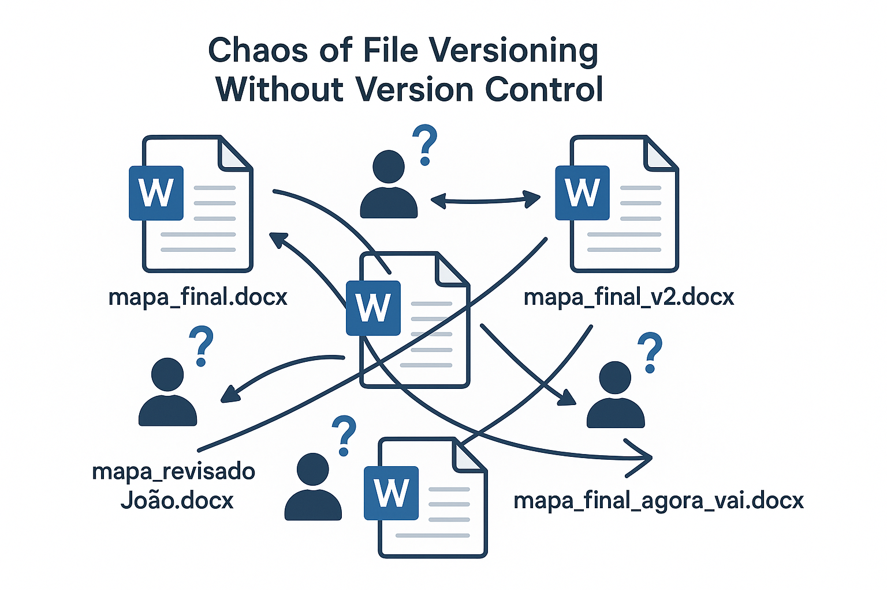
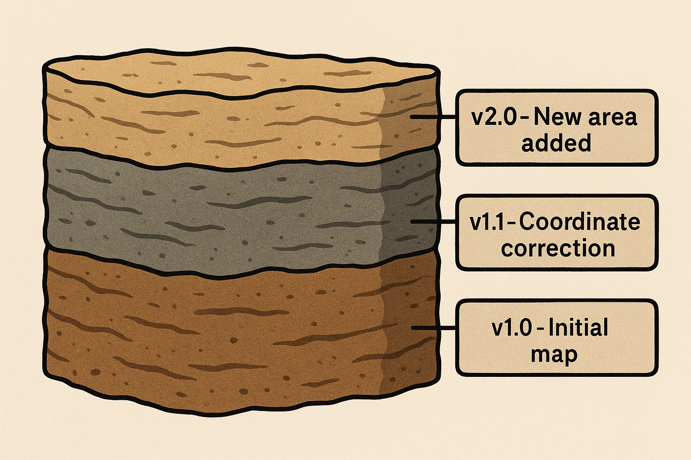
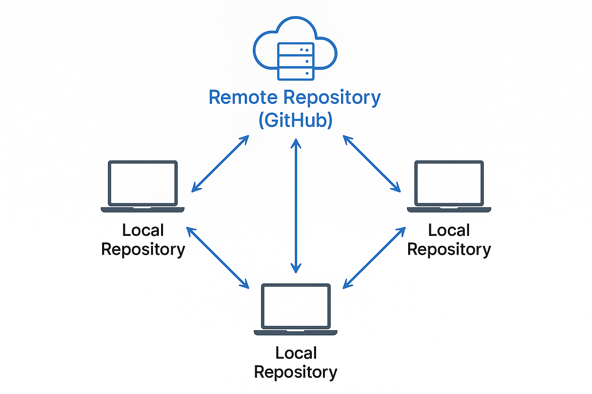
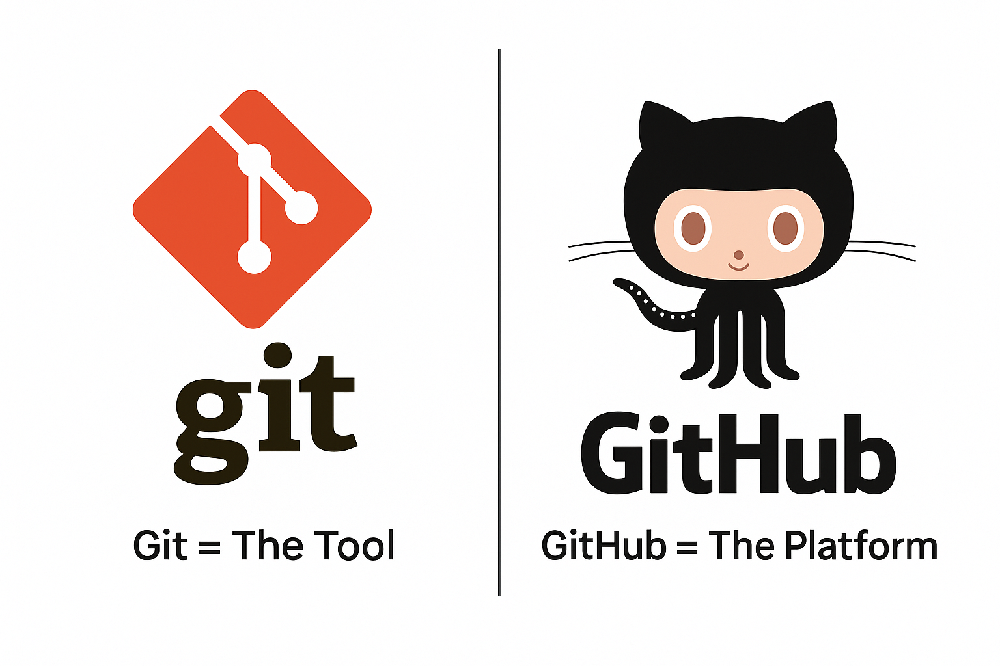
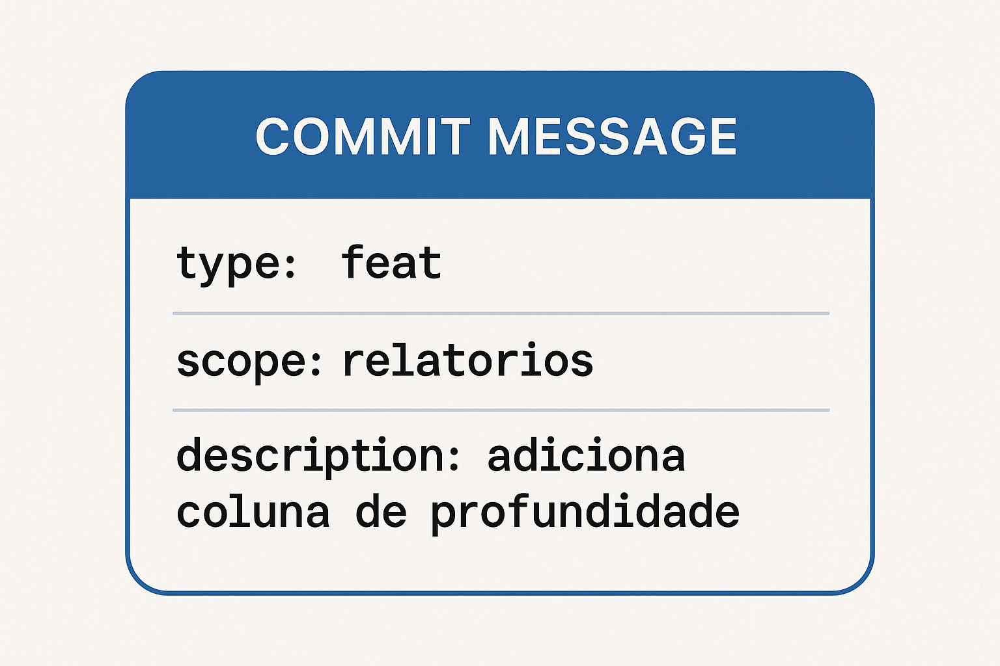

Olá! Se você colabora com projetos de software, seja na criação de requisitos, na validação de funcionalidades ou na leitura de documentação, este curso é para você. Vamos desmistificar o "mundo do código" e mostrar como o controle de versão organiza o trabalho de todo o time, incluindo o seu.
Usaremos analogias do universo da mineração para tornar tudo mais claro e prático. Ao final, você se sentirá muito mais à vontade para interagir com as equipes de desenvolvimento usando ferramentas como o GitHub.
Imagine a seguinte situação: a equipe de geologia precisa atualizar um mapa de sondagem crucial para uma nova fase de exploração.
mapa_sondagem_v1.docxmapa_sondagem_revisado_Joao.docxmapa_sondagem_FINAL.docxmapa_sondagem_FINAL_agora_vai.docxQual é a versão correta? A de Carla ou a última de Ana? O que João alterou foi incluído? Esse é o problema da falta de um "ponto central da verdade". Trabalhar com cópias de arquivos em pastas e e-mails gera confusão, retrabalho e um alto risco de usar informações desatualizadas, o que em um projeto de mineração pode ter consequências sérias.
Para resolver esse caos, usamos um Sistema de Controle de Versão (VCS - Version Control System). Pense nele como um "livro de registros geológico" ou um diário de bordo de uma perfuração.
É exatamente isso que um VCS faz com arquivos. Ele registra cada alteração, quem a fez, quando e por quê. Nada é perdido. Você pode "viajar no tempo" e ver exatamente como um arquivo era em qualquer ponto da história do projeto.
O sistema mais usado no mundo para isso se chama Git.
O Git funciona com um modelo "distribuído". O que isso significa?
Ele pode fazer todas as anotações e rascunhos que quiser em sua cópia local, sem medo de atrapalhar o trabalho dos outros ou de estragar o documento oficial. O Git garante que a cópia local dele contenha todo o histórico do projeto até aquele momento.
| Característica | Sistema Centralizado (ex: SVN) | Sistema Distribuído (ex: Git) |
|---|---|---|
| Histórico | Apenas no servidor central | Cópia completa em cada máquina |
| Trabalho offline | Limitado | Totalmente funcional |
| Velocidade | Depende da rede | Operações locais são instantâneas |
| Backup | Ponto único de falha | Cada clone é um backup completo |
| Branches | Pesadas e lentas | Leves e rápidas |
É importante não confundir os dois:
Existem outras plataformas como o GitHub, por exemplo, GitLab e Bitbucket, mas todas usam o Git por baixo dos panos.
Antes de colocarmos a mão na massa, precisamos entender o "mapa de tráfego" do nosso projeto. Não criamos branches (ramificações) de qualquer maneira. Usamos um modelo de organização chamado GitFlow.
O GitFlow define um conjunto de branches com propósitos específicos:
main: A branch principal. Ela representa a versão oficial, estável e em produção. Ninguém trabalha diretamente aqui. Ela só recebe o código que já foi testado e aprovado. É a nossa "planta mestra" arquivada.develop: A branch de desenvolvimento. É aqui que todas as novas funcionalidades são integradas. Ela é o "canteiro de obras" principal, onde o trabalho do dia a dia acontece.feature/...): São criadas a partir da develop. É aqui que você trabalha.
feature/relatorio-geologico-automaticorelease/...): Quando a develop tem funcionalidades suficientes para uma nova versão, cria-se uma branch de release. Nela, apenas se fazem pequenos ajustes e correções finais antes do lançamento oficial.hotfix/...): Se um bug crítico é encontrado na versão em produção (main), uma branch de hotfix é criada a partir da main para uma correção urgente.Para você, colaborador, o mais importante é: seu trabalho sempre começará em uma branch feature (ou fix, docs, etc.) que nasce da develop.
main. Em repositórios mais antigos, você pode encontrar o nome master, mas essa é uma nomenclatura antiga que está sendo substituída.
Você nunca trabalha diretamente na versão oficial. O processo é seguro e se divide em etapas:
O primeiro passo é criar um "fork" do repositório oficial.
Depois de fazer o fork, você precisa baixar essa cópia para o seu computador:
Agora, dentro do seu projeto, você cria uma "branch".
Exemplo de criação de branch:
Esse método garante que o projeto principal (main branch) permaneça sempre estável e funcional.
Enquanto trabalha na sua branch, você precisa salvar seu progresso. Cada "ponto de salvamento" no Git é chamado de commit.
Uma boa mensagem de commit é fundamental. Para padronizar isso, usamos um padrão chamado Conventional Commits. Ele formata a mensagem para que tanto humanos quanto máquinas possam entendê-la. A estrutura é:
<tipo>[escopo opcional]: <descrição>
[corpo opcional]
[rodapé opcional]Fazer commits pequenos e bem descritos cria um histórico limpo e compreensível.
Seu trabalho está pronto na sua branch local. Como você o apresenta para a equipe?
Primeiro, você faz um "push".
Este é o passo mais importante da colaboração.
Dentro do Pull Request no GitHub, a equipe pode:
developQuando um Pull Request é aprovado e integrado, ele pode gerar uma nova versão do software. Mas o que significa "versão 2.5.1"? Para isso, usamos o Versionamento Semântico (SemVer).
O formato é MAJOR.MINOR.PATCH (Ex: 1.4.2).
| Componente | Quando incrementar | Exemplo no contexto de mineração |
|---|---|---|
| MAJOR (1.x.x) | Mudanças que quebram a compatibilidade com versões anteriores | Mudar o sistema de coordenadas de um mapa. Os dados antigos não são mais compatíveis com o novo formato. Requer atenção de todos. |
| MINOR (x.4.x) | Novas funcionalidades adicionadas de forma retrocompatível | Adicionar um novo tipo de relatório ao sistema. Os relatórios antigos continuam funcionando, mas agora há uma opção nova. |
| PATCH (x.x.2) | Correções de bugs retrocompatíveis | Corrigir um erro de cálculo em um relatório existente. A funcionalidade é a mesma, mas agora está correta. |
Os Conventional Commits que vimos antes ajudam a automatizar isso! Se um commit é do tipo feat, o sistema sabe que deve incrementar a versão MINOR. Se for fix, incrementa a PATCH.
1.0.0 → 1.0.1: Correção de bug (PATCH)1.0.1 → 1.1.0: Nova funcionalidade (MINOR)1.9.5 → 2.0.0: Mudança que quebra compatibilidade (MAJOR)Agora que você entende os conceitos, vamos ao passo a passo prático para criar um repositório no GitHub.
meu-primeiro-projeto)Agora que o repositório foi criado no GitHub, você precisa cloná-lo para trabalhar localmente:
Aqui estão os comandos mais importantes que você usará no dia a dia ao trabalhar com sua cópia local do repositório.
git reset --hard descartam alterações permanentemente. Use com cuidado!
Conflitos acontecem quando duas pessoas editam a mesma parte de um arquivo. O Git marca essas áreas:
<<<<<<< HEAD
Sua versão do código
=======
Versão do código de outra pessoa
>>>>>>> branch-namePara resolver:
<<<<<<<, =======, >>>>>>>)git add arquivo.txtgit commitNem todos os arquivos se beneficiam igualmente do controle de versão. Entender as diferenças é fundamental para trabalhar de forma eficiente.
São arquivos que contêm apenas caracteres legíveis, sem formatação especial. O Git funciona perfeitamente com eles.
São arquivos que contêm dados em formato não legível diretamente por humanos. O Git pode armazená-los, mas com limitações significativas.
| Característica | Arquivos de Texto (.md, .py, .txt) | Arquivos Binários (.docx, .pdf, .xlsx) |
|---|---|---|
| Visualização de diferenças | ✅ Linha por linha, muito claro | ❌ Apenas "arquivo mudou" |
| Merge automático | ✅ Git combina alterações inteligentemente | ❌ Impossível, escolha uma versão |
| Tamanho do repositório | ✅ Pequeno, apenas diferenças são armazenadas | ❌ Grande, cada versão completa é armazenada |
| Histórico navegável | ✅ Pode ver qualquer linha em qualquer momento | ❌ Precisa baixar o arquivo inteiro |
| Resolução de conflitos | ✅ Edição manual clara e precisa | ❌ Escolher versão A ou B inteira |
| Colaboração simultânea | ✅ Múltiplas pessoas, mesma área | ❌ Última pessoa a fazer push "ganha" |
.gitignore para não versionar| Tipo de Documento | Melhor Ferramenta | Por quê |
|---|---|---|
| Documentação técnica | Markdown no Git | Versionamento perfeito, fácil de revisar |
| Documentos de texto colaborativo | Google Docs, Notion | Edição simultânea em tempo real |
| Planilhas | Google Sheets, Excel Online | Colaboração em tempo real, histórico de versões |
| Apresentações | Google Slides, PowerPoint Online | Edição colaborativa, comentários |
| Diagramas | Mermaid (texto), Draw.io | Mermaid é texto puro, versionável |
Para documentação técnica, o Markdown é vastamente superior ao Word quando usado com Git:
Conclusão: Para documentação que será versionada com Git, sempre prefira Markdown. Para documentos colaborativos com formatação rica, use ferramentas online como Google Docs.
Agora que você conhece todos os conceitos, aqui está o fluxo completo que você seguirá no dia a dia:
Crie sua cópia do projeto no GitHub
Baixe o repositório para sua máquina
Crie uma ramificação da develop
Salve suas alterações com mensagens claras
Envie sua branch para o GitHub
Peça revisão e integração à develop
Aprofunde seus conhecimentos com estes recursos oficiais e materiais de apoio:
Agora que você concluiu o curso, recomendamos: